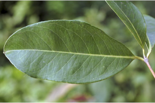
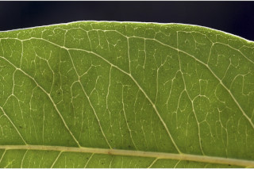
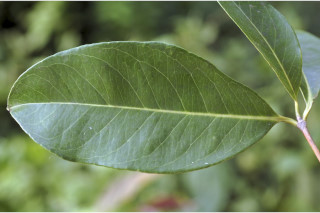
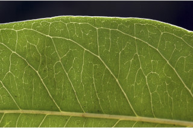

Trees up to 20 m tall.
20 ಮೀ. ಎತ್ತರದವರೆಗೆ ಬೆಳೆಯುವ ಮರಗಳು.
Trees up to 20 m tall.
மரங்கள் 20 மீ. உயரம் வரை வளரக்கூடியது.
Bark smooth, greyish brown, blaze cream.
ತೊಗಟೆ ನಯವಾಗಿದ್ದು ಬೂದು ಮಿಶ್ರಿತ ಕಂದು ಬಣ್ಣದಲ್ಲಿರುತ್ತದೆ;ಕಚ್ಚು ಮಾಡಿದ ಜಾಗ ಕೆನೆ ಬಣ್ಣದಲ್ಲಿರುತ್ತದೆ.
Bark smooth, greyish brown, blaze cream.
மரத்தின் பட்டை வழவழப்பானது, சாம்பல்-ப்ரவுன் நிறமானது, உள்பட்டை கிரீம் நிறமானது.
Branchlets terete, glabrous.
ಕಿರುಕೊಂಬೆಗಳು ದುಂಡಾಗಿರುತ್ತವೆ ಮತ್ತು ರೋಮರಹಿತವಾಗಿರುತ್ತವೆ.
Branchlets terete, glabrous.
சிறியநுனிக்கிளைகள் குறுக்குவெட்டுத் தோற்றத்தில் வளையமானது, உரோமங்களற்றது.
Leaves simple, opposite, decussate; petiole 0.5-1.5 cm long, canaliculate, glabrous; lamina 7.5-19 x 2.5-8 cm, elliptic, oblanceolate, apex acuminate and twisted or acute with blunt tip, base acute to cuneate, margin entire, pellucid gland dotted, coriaceous, glabrous; midrib canaliculate above; intramarginal nerve present (sometimes obscure); midrib slightly canaliculate above; secondary_nerves 8-12 pairs; tertiary_nerves horizontally reticulo-percurrent.
ಎಲೆಗಳು ಸರಳವಾಗಿದ್ದು ಅಭಿಮುಖವಾಗಿ ಜೋಡನೆಗೊಂಡಿದ್ದು ಕಾಂಡದ ಎರಡೂ ಕಡೆ ಎದುರು ಬದರಿನ ಲಂಬ ಸಾಲಿನಲ್ಲಿರುತ್ತವೆ;ತೊಟ್ಟುಗಳು 0.5-1.5 ಸೆಂ.ಮೀ. ಉದ್ದಹೊಂದಿದ್ದು ಕಾಲುವೆಗೆರೆ ಸಮೇತವಿರುತ್ತವೆ ಮತ್ತು ರೋಮರಹಿತವಾಗಿರುತ್ತವೆ;ಪತ್ರಗಳು ಹಾಗೂ 7.5–19 X 2.5–8 ಸೆಂ.ಮೀ.ವರೆಗಿನ ಗಾತ್ರವಿದ್ದು ಬುಗುರಿ-ಭರ್ಜಿಯ ಆಕಾರ,ತಿರುಚಿಕೊಂಡ ಅಗ್ರವುಳ್ಳ ಕ್ರಮೇಣ ಚೂಪಾಗುವ ಮೊಂಡಾಗ್ರವುಳ್ಳ ಚೂಪಾದ ತುದಿ, ಚೂಪಾದದುದರಿಂದ ಹಿಡಿದು ಬೆಣೆಯಾಕಾರದ ಬುಡ,ನಯವಾದ ನಯವಾದ ಅಂಚು,ಪ್ರಕಾಶ ಭೇಧ್ಯ ರಸಗ್ರಂಥಿ ಚುಕ್ಕೆಗಳ ಸಮೇತವಿದ್ದು ತೊಗಲನ್ನೋಲುವ ಮೇಲ್ಮೈ ಹೊಂದಿದ್ದು ರೋಮರಹಿತವಾಗಿರುತ್ತವೆ;ಮಧ್ಯ ನಾಳ ಕೊಂಚವಾಗಿ ಕಾಲುವೆಗೆರೆ ಸಮೇತವಿರುತ್ತದೆ;ಅಂತರ ಅಂಚಿನ ನಾಳಗಳು ಇರುತ್ತವೆ (ಕೆಲವು ವೇಳೆ ಅಸ್ಪಷ್ಟವಾಗಿರುತ್ತವೆ);ಎರಡನೇ ದರ್ಜೆಯ ನಾಳಗಳು 8-12 ಜೋಡಿಗಳಿರುತ್ತವೆ; ಮೂರನೇ ದರ್ಜೆಯ ನಾಳಗಳು ಲಂಬ ಕೋನಕ್ಕೆ ಅಡ್ಡವಾಗಿದ್ದು, ಜಾಲಬಂಧ ನಾಳ ವಿನ್ಯಾಸದಲ್ಲಿದ್ದು ಎಲೆದಿಂಡಿಗೆ ಅಡ್ಡವಾಗಿ ಕೂಡುತ್ತವೆ.
Leaves simple, opposite, decussate; petiole 0.5-1.5 cm long, canaliculate, glabrous; lamina 7.5-19 x 2.5-8 cm, elliptic, oblanceolate, apex acuminate and twisted or acute with blunt tip, base acute to cuneate, margin entire, pellucid gland dotted, coriaceous, glabrous; midrib canaliculate above; intramarginal nerve present (sometimes obscure); midrib slightly canaliculate above; secondary_nerves 8-12 pairs; tertiary_nerves horizontally reticulo-percurrent.
இலைகள் தனித்தவை, எதிரடுக்கமானவை, குறுக்குமறுக்கானவை; இலைக்காம்பு 0.5-1.5 செ.மீ. நீளமானது, இலைக்காம்பு குறுக்குவெட்டுத் தோற்றத்தில் கேனாலிகுலேட், உரோமங்களற்றது; இலை அலகு 7.5-19 X 2.5-8 செ.மீ., நீள்வட்ட வடிவானது, தலைகீழ் ஈட்டி வடிவானது, அலகின் நுனி அதிக்கூரியது மற்றும் திருகியது அல்லது கூரியது அதன் முனை மழுங்கியது, அலகின் தளம் கூரியது முதல் ஆப்பு வடிவானது, அலகின் விளிம்பு முழுமையானது, ஒளிபுகும் சுரப்பி புள்ளிகளுடையது, கோரியேசியஸ், உரோமங்களற்றது; மையநரம்பு மேற்புறத்தில் அலகின் பரப்பைவிட பள்ளமானது; விளிம்பு நரம்பு (இண்ட்ராமார்ஜினல் நரம்பு) கொண்டது (சிலசமயங்களில் கண்களுக்கு புலப்படாது); மையநரம்பு மேற்புறத்தில் அலகின் பரப்பைவிட சிறிது பள்ளமானது; இரண்டாம் நிலை நரம்புகள் 8-12 ஜோடிகள்; மூன்றாம் நிலை நரம்புகள் கிடைமட்டமான வலைப்பின்னல்-பெர்க்கரண்ட் அமைப்பு கொண்டது.
Flowers large, white, in terminal cymes; pedicels 0.5 cm long; calyx tube obconic.
ಹೂಗಳು ಬಿಳಿ ಬಣ್ಣದಲ್ಲಿದ್ದು ತುದಿಯಲ್ಲಿನ ಮಧ್ಯಾರಂಭಿ ಪುಷ್ಪಮಂಜರಿಯಲ್ಲಿರುತ್ತವೆ;ಹೂ ತೊಟ್ಟುಗಳು 0.5 ಸೆಂ.ಮೀ. ಉದ್ದವಿರುತ್ತವೆ;ಪುಷ್ಪಪಾತ್ರೆಯ ಕೊಳವೆ ತಲೆಕೆಳಗಾದ ಶಂಖುವಿನ ಆಕಾರದಲ್ಲಿರುತ್ತದೆ.
Flowers large, white, in terminal cymes; pedicels 0.5 cm long; calyx tube obconic.
மலர்கள் பெரியவை, வெள்ளை நிறமானது, மஞ்சரி தண்டின் நுனியில் காணப்படும் சைம் வகை; மலர்காம்பு 0.5 செ.மீ. நீளமானது; புல்லி குழாய் தலைகீழ் கூம்பு வடிவானது.
Berry, 2-2.5 cm across, hemispherical, purple, crowned by calyx lobes.
ಬೆರ್ರಿ ಫಲಗಳು 2-2.5ಸೆಂ.ಮೀ. ಅಡ್ಡಗಲತೆಯಿದ್ದು ಅರ್ಧಗೋಳಾಕೃತಿಯಲ್ಲಿದ್ದು ಕೆನ್ನೀಲಿ ಬಣ್ಣ ಹೊಂದಿದ್ದು ಮುಕುಟದಲ್ಲಿ ಪುಷ್ಪಪಾತ್ರೆಯ ಸಮೇತವಿರುತ್ತವೆ.
Berry, 2-2.5 cm across, hemispherical, purple, crowned by calyx lobes.
முழுச்சதைகனி (பெர்ரி), 2-2.5 செ.மீ. குறுக்களவுடையது, கோள வடிவமானது, பர்புள் நிறமானது, நிரந்தரமான புல்லி இதழ்களுடையவை.

 


